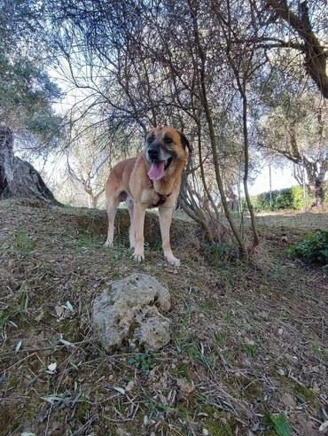
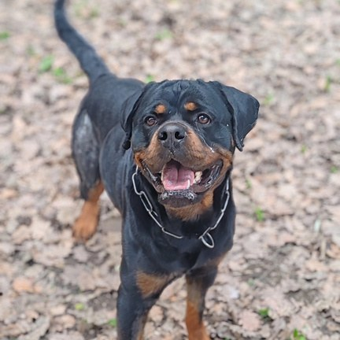
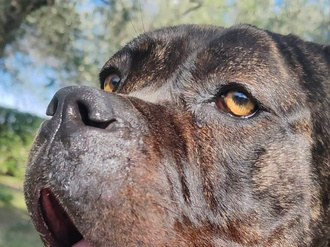
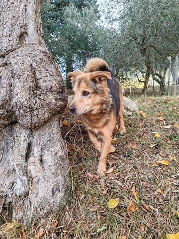
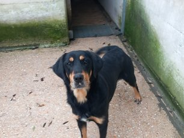
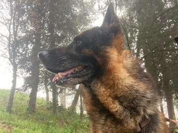
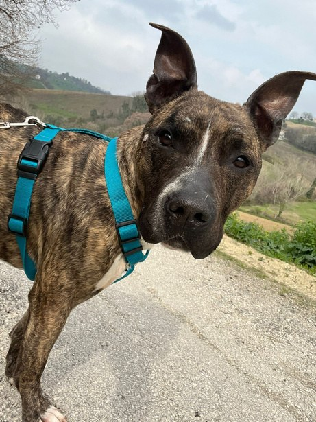

Ci sono cani che aspettano una famiglia più a lungo: anziani, con storie difficili, con esigenze speciali. Adottarli a distanza significa restare al loro fianco garantendo cibo, cure e serenità. Loro non lo dimenticheranno.
Leggi le loro storie e scegli quello con cui vuoi iniziare un legame.
Da un mese a un anno intero. Decidi tu quanto vuoi impegnarti.
Compili il form, scegli come sostenerci: bonifico ricorrente o Rete del Dono.
Ricevi il certificato e aggiornamenti mensili con foto e video su WhatsApp.
Ogni contributo si trasforma direttamente in cibo, cure veterinarie e serenità per il cane che scegli.
Per iniziare a conoscere il tuo nuovo amico.
Un trimestre di sostegno costante.
Sei mesi al fianco del tuo amico.
Un anno intero di legame e amore.
Ognuno ha una storia da raccontare e una vita da ricostruire. Clicca sulla loro foto per conoscerli davvero.

Trovato mentre vagava da solo. Vivace, buono, sempre pronto a partecipare.

Un vero patatone. Affettuoso, dolce, giocherellone.

Arrivata sottopeso, ora sta guarendo. Giocherellona e brillante.

Ha vissuto anni nel portabagagli di un'auto. Oggi impara cosa significa essere amato.

Un'adozione andata male e ora è di nuovo qui. Vivace, curiosa, esploratrice.

Paziente e buonissimo. Vuole concludere la vita in una casa vera.

Arrivato in condizioni gravissime, si sta rialzando giorno dopo giorno.
I nostri volontari ti contatteranno nelle prossime 48h su WhatsApp o via email.
Abbiamo ricevuto la tua richiesta per l'adozione di — con il pacchetto —.
I nostri volontari ti contatteranno nelle prossime 48h per confermare tutto. Nel frattempo, ecco come completare l'attivazione:
Accedi all'home banking del tuo istituto e imposta un bonifico ricorrente con questi dati:
Suggerimento: la causale ci aiuta ad associare il pagamento alla tua adozione — non modificarla.
Appena imposti il bonifico, mandaci uno screenshot su WhatsApp: prepariamo subito il certificato di adozione e iniziamo gli aggiornamenti mensili.
💬 Scrivici su WhatsAppSulla nostra pagina di Rete del Dono puoi impostare una donazione ricorrente con carta di credito, PayPal o Satispay.
Suggerimento: nella causale ci aiuta ad associare il pagamento alla tua adozione — non modificarla.
Vai a Rete del Dono ↗Appena hai attivato la donazione, mandaci un messaggio su WhatsApp: ti confermiamo l'adozione e ti mandiamo il certificato.
💬 Scrivici su WhatsAppUn PDF che attesta il legame con il tuo nuovo amico, con il suo nome, la sua foto e i tuoi dati.
Ogni mese ricevi aggiornamenti concreti dal rifugio: come sta, cosa fa, come è cresciuto.
I nostri volontari sono a tua disposizione per qualsiasi domanda o richiesta.